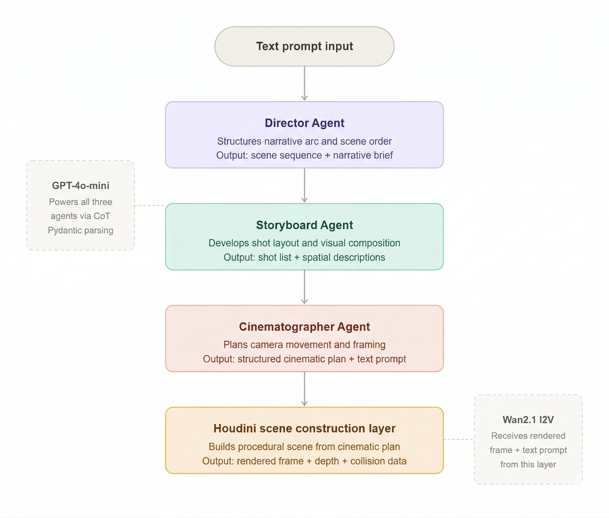
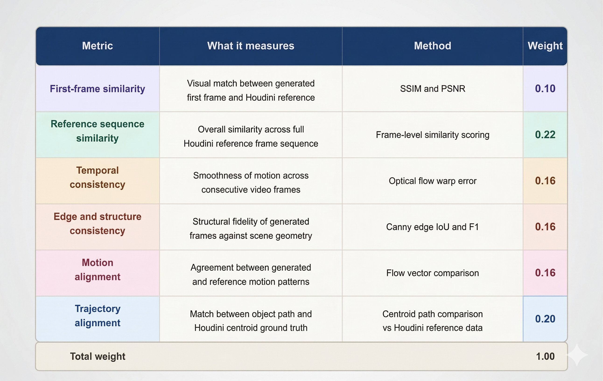
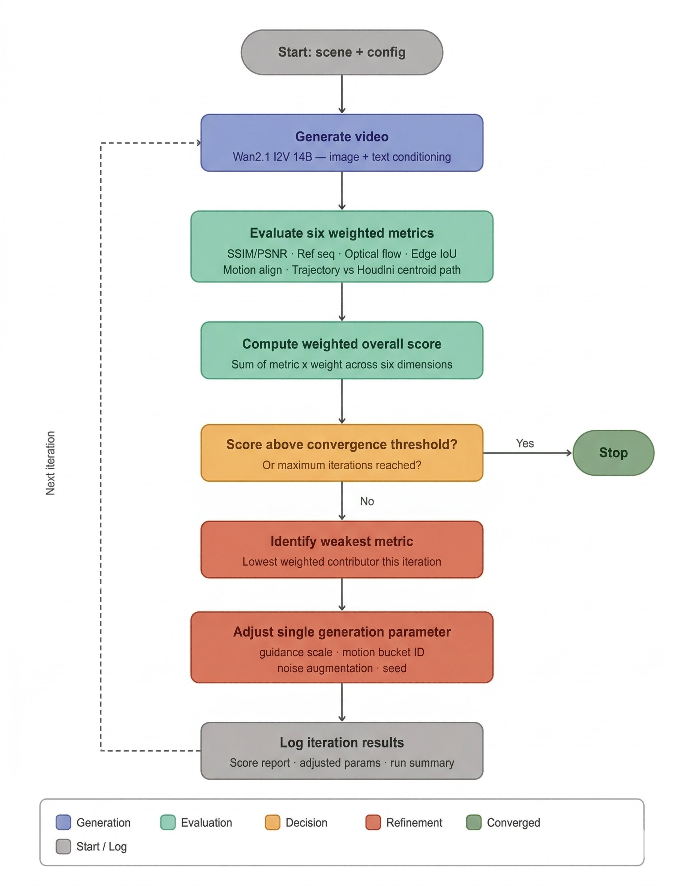

Applying a decade of VFX pipeline engineering to AI - building systems that plan, generate, evaluate, and refine autonomously.
A fully algorithmic, closed-loop pipeline for physics-aware video generation. Multi-agent planning decomposes scenes, Houdini constructs 3D environments, Wan2.1 I2V synthesises video, six weighted metrics evaluate quality, and adaptive refinement iterates - all without human intervention.
Supervised by Dr. Saber Farag - Northumbria University
A walkthrough of the end-to-end system.
Three GPT-4o-mini agents - Director, Storyboard, and Cinematographer - collaborate to decompose a scene description into structured parameters via Chain of Thought reasoning and Pydantic outputs.

Agent plans become procedural 3D environments in Houdini - geometry, depth maps, collision detection, physics simulation. The same pipeline techniques used on feature films, now driven by AI.
Rendered frames from Houdini feed into Wan2.1 at 624x352, 25 frames, 8fps. Three test scenes evaluated the pipeline across different motion types:
Six weighted metrics assess physical plausibility, visual fidelity, temporal consistency, and scene accuracy. Entirely algorithmic - no VLM.

Scores feed back into the system. The pipeline identifies the weakest metric, adjusts a single generation parameter, and iterates until convergence at 0.75. Scene 3 Config B converged at 0.7525 on iteration 3.

Director, Storyboard, and Cinematographer agents via GPT-4o-mini with CoT reasoning and Pydantic outputs.
Procedural 3D environments with depth maps, collision geometry, and physics simulation.
Image-to-video at 624x352, 25 frames, 8fps, 30-step joint inference. 3D-rendered input provides geometry and depth priors.
SSIM/PSNR, reference sequence similarity, optical flow, Canny edge IoU, flow vectors, centroid path vs Houdini ground truth.
Closed-loop feedback adjusts guidance scale, motion bucket, noise augmentation, or seed. Early stopping at 0.75 threshold.
VLM-based semantic evaluation, AnimateDiff with ControlNet, video-to-video refinement, and depth map integration as a direct conditioning signal.